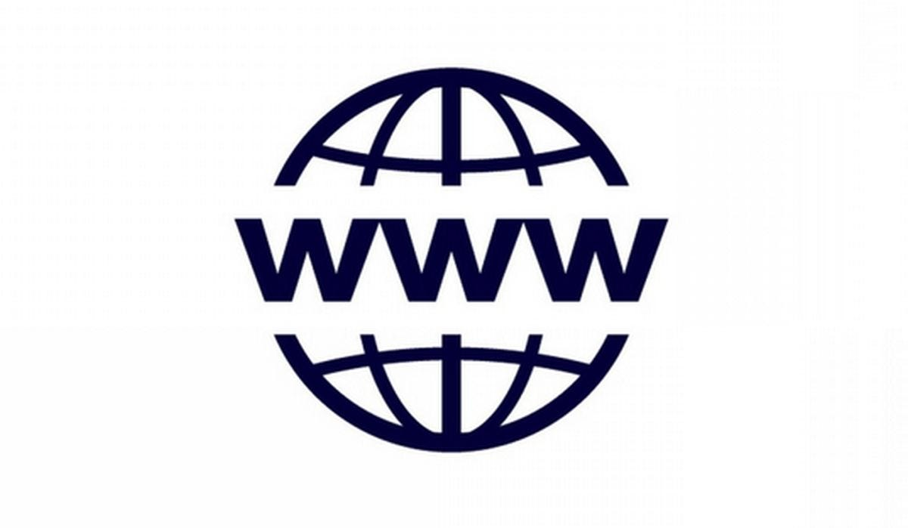

Från militärt experiment till globalt nätverk (ARPANET) Det som idag är internet började som ARPANET, ett projekt finansierat av det amerikanska försvarsdepartementet under kalla kriget. Syftet var att skapa ett nätverk som inte hade en central hubb; om en del av nätet slogs ut skulle informationen kunna ta en annan väg. Det första meddelandet som skickades var ordet "LOGIN", men systemet kraschade efter de två första bokstäverna, så historiens första digitala meddelande blev faktiskt bara "LO".

World Wide Web, Internets "ansikte" Många blandar ihop internet och webben, men World Wide Web är egentligen bara en tjänst som körs ovanpå internet. Innan Tim Berners-Lee släppte koden för den första webbläsaren 1991, bestod internet mest av textbaserade kommandon och filöverföringar. Han skapade HTML (språket för hemsidor) och HTTP (protokollet för att hämta dem), och han valde att göra tekniken gratis för alla, vilket är anledningen till att internet kunde växa så explosionsartat.

Sveriges pionjärresa och det historiska mejlet Sverige var extremt tidiga med internet tack vare eldsjälar inom universitetsvärlden. Redan 1983 skickades det första svenska mejlet till Björn Eriksen, som senare fick smeknamnet "Mr. Internet" i Sverige. Han blev också den som registrerade toppdomänen .se år 1986. Under 90-talet tog utvecklingen fart på allvar med "hem-PC-reformen", där staten gav skattelättnader för anställda att hyra en dator via jobbet, vilket gjorde svenskarna till ett av världens mest it-kunniga folk.